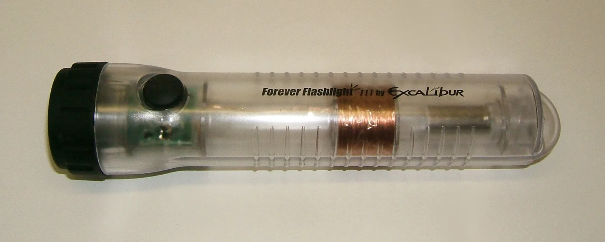

Sähkömagneettinen induktio
Miksi polkupyörän dynamo sytyttää lampun vain silloin, kun pyörä pyörii, vaikka dynamossa ei ole paristoa eikä akkua?
Pohjatiedot
- Magneettikenttä kohdistaa liikkuvaan varattuun hiukkaseen voiman $F = |q|vB$, kun nopeus on kohtisuorassa kenttää vastaanluku Varatun hiukkasen liike sähkö- ja magneettikentässä
- Virtajohdin ja käämi synnyttävät ympärilleen magneettikentänluku Virtajohtimen ja käämin magneettikenttä
Ydinpolku: etene vaiheiden mukaan. Ydinpolkuun kuuluvat laskujen lisäksi tutkimukset, selitykset ja kuvaajat. Valinnainen-merkityt tehtävät tarjoavat lisäharjoittelua. Valinnaisia tehtäviä 4.
Pohdinta
Polkupyörän napadynamossa ei ole paristoa eikä akkua. Kun pyörä seisoo, lamppu on pimeä. Heti kun pyörä alkaa pyöriä, lamppu syttyy, ja mitä lujempaa ajat, sitä kirkkaammin se palaa. Dynamon sisällä on kestomagneetti ja johdinkäämi. Vuonna 1831 Michael Faraday teki samanlaisen havainnon laboratoriossaan: magneetti käämin vieressä ei tuottanut virtaa, mutta liikkuva magneetti tuotti.
Mikä magneetin ja käämin tilanteessa ratkaisee, syntyykö käämiin jännite, ja mistä jännitteen suuruus riippuu?
Valinnainen Kertaa: magneettinen voima varaukseen
Ennusta
Tee ennusteet ennen tutkimista 2 kysymystä
Ennuste 1: käämi kokonaan kentässä
Ennuste 2: kaksinkertainen vauhti
Tutki
Neliön muotoinen käämi kulkee tasaisella vauhdilla magneettikentän alueen läpi. Käynnistä liike ja seuraa, miten magneettivuo ja induktiojännite muuttuvat ajan kuluessa.
Simulaatio
Käyttöohje
Valitse käämin vauhti $v$, magneettivuon tiheys $B$ ja kierrosten lukumäärä $N$, ja paina Käynnistä. Käämi lähtee kentän vasemmalta puolelta ja kulkee alueen läpi. Vihreät ristit kuvaavat magneettikenttää, joka osoittaa paperiin päin, ja sininen nuoli käämin nopeutta. Kuvaajat piirtyvät liikkeen aikana: ylempi on yhden kierroksen läpi kulkeva magneettivuo $\Phi$ ja alempi käämin induktiojännite $e$. Kun käämi on kulkenut kentän läpi, lukemat-riville tulevat sisääntulon jännite, sen kesto ja jännite kentän sisällä. Nopeus-valikko muuttaa vain animaation tahtia, ei käämin vauhtia. Jos muutat säätimiä kesken liikkeen, käämi palaa alkuun.
Mallin oletukset
Käämi on neliö, jonka sivu on $l = 0{,}10\,\text{m}$. Kenttä on homogeeninen $0{,}20\,\text{m}$:n levyisellä alueella ja sen ulkopuolella nolla, ja kentän reuna on terävä. Käämin pystysuorat sivut ovat koko ajan kentän alueen korkeudella. Käämi liikkuu tasaisella vauhdilla, eikä mikään jarruta sitä. Jännitemittari ei ota virtaa, joten käämissä ei kulje virtaa. Lukemat ovat mallin laskemia arvoja, eivät mittauksia.
Laskennan selitys
Kun käämin etusivu on matkan $x$ kentän sisällä, yhden kierroksen läpi kulkeva vuo on $\Phi = B \cdot l \cdot x$, kunnes koko käämi on kentässä. Sisääntulon aikana $x$ kasvaa tasaisesti, joten induktiojännite on
$$e = -N\frac{\Delta\Phi}{\Delta t} = -NBlv$$
Kentän sisällä vuo on vakio $\Phi = Bl^2$, joten $e = 0$. Ulostulon aikana vuo pienenee yhtä nopeasti kuin se kasvoi, joten $e = +NBlv$. Sisääntulo kestää ajan $\Delta t = l : v$. Miinusmerkin merkitys selviää luvussa Lenzin laki ja pyörrevirrat.
Koe 1: vain vauhti muuttuu
Testaa ennusteet. Magneettivuon tiheys $B = 0{,}20\,\text{T}$ ja kierrosten lukumäärä $N = 10$ pysyvät samoina; muuta vain käämin vauhtia $v$. Aja käämi kentän läpi painamalla Käynnistä ja kirjaa tulos, kun käämi on kulkenut kentän läpi. Kirjaa ainakin vauhdit $0{,}10\,\text{m/s}$ ja $0{,}20\,\text{m/s}$, halutessasi myös $0{,}05\,\text{m/s}$ ja $0{,}15\,\text{m/s}$. Laske jokaiselle riville jännitteen ja sisääntulon keston tulo $e \cdot \Delta t$.
Alkutila: vauhti = $0{,}1\,\text{m/s}$, magneettivuon tiheys = $0{,}2\,\text{T}$, kierroksia = $10$. Vakiona: magneettivuon tiheys, kierroksia. Muutetaan: vauhti.
| vauhti | $e$ sisääntulossa $(\text{mV})$ | $\Delta t$ $(\text{s})$ | $e$ kentän sisällä $(\text{mV})$ |
|---|
Koe 2: vain kierrosten lukumäärä muuttuu
Vauhti $v = 0{,}10\,\text{m/s}$ ja magneettivuon tiheys $B = 0{,}20\,\text{T}$ pysyvät samoina; muuta vain kierrosten lukumäärää $N$. Aja käämi kentän läpi jokaisella valinnalla ja kirjaa sisääntulon jännite. Kirjaa ainakin kaksi kierrosmäärää, esimerkiksi $5$ ja $20$.
Alkutila: vauhti = $0{,}1\,\text{m/s}$, magneettivuon tiheys = $0{,}2\,\text{T}$, kierroksia = $10$. Vakiona: vauhti, magneettivuon tiheys. Muutetaan: kierroksia.
| kierroksia | $e$ sisääntulossa $(\text{mV})$ |
|---|
Johtopäätös: mistä induktiojännite riippuu?
Kirjoita taulukoidesi perusteella: miten sisääntulon jännite riippuu käämin vauhdista ja kierrosten lukumäärästä, ja mitä jännite on, kun käämi on kokonaan kentän sisällä? Mitä huomaat tulosta $e \cdot \Delta t$ kokeessa 1? Vertaa sitä yhden kierroksen suurimpaan vuohon $2{,}0\,\text{mWb}$ ja kierrosten lukumäärään.
Mallivastaus
Kokeessa 1 sisääntulon jännite oli vauhdilla $0{,}10\,\text{m/s}$ $-20{,}0\,\text{mV}$ ja vauhdilla $0{,}20\,\text{m/s}$ $-40{,}0\,\text{mV}$, joten jännite on verrannollinen vauhtiin. Sisääntulo kesti vastaavasti $1{,}00\,\text{s}$ ja $0{,}50\,\text{s}$, joten tulo $e \cdot \Delta t = -20\,\text{mV}\cdot\text{s}$ pysyi samana. Se on $-N\Delta\Phi = -10 \cdot 2{,}0\,\text{mWb} = -20\,\text{mWb}$, sillä $1\,\text{mV}\cdot\text{s} = 1\,\text{mWb}$. Jännite on siis $e = -N \cdot \Delta\Phi : \Delta t$: sama vuon muutos nopeammin antaa suuremman jännitteen. Kokeessa 2 jännite oli $5$ kierroksella $-10{,}0\,\text{mV}$ ja $20$ kierroksella $-40{,}0\,\text{mV}$, joten se on verrannollinen kierrosten lukumäärään. Kun käämi oli kokonaan kentän sisällä, jännite oli nolla, koska vuo ei muuttunut. Arvot ovat mallin laskemia.
Arvioi oma vastauksesi
Rastita kohdat, jotka omassa vastauksessasi jo on.
Kertaa asia teoriasta ja harjoittele tehtävillä.
Teoria
Ydinajatus
Faradayn havainto
Luvussa Virtajohtimen ja käämin magneettikenttä sähkövirta synnytti magneettikentän. Michael Faraday etsi vuosia käänteistä ilmiötä: voisiko magneettikenttä synnyttää sähkövirran? Vuonna 1831 hän huomasi, että paikallaan oleva magneetti käämin vieressä ei saa aikaan mitään, vaikka magneetti olisi voimakas. Kun magneetti työnnetään käämiin, käämiin kytketyn jännitemittarin neula kääntyy. Kun magneetti on paikallaan käämin sisällä, neula palaa nollaan. Kun magneetti vedetään pois, neula kääntyy vastakkaiseen suuntaan. Mitä nopeammin magneettia liikutetaan ja mitä enemmän käämissä on kierroksia, sitä suurempi on jännite. Sama tapahtuu, jos magneetti on paikallaan ja käämiä liikutetaan.

Muutos synnyttää jännitteen
Ilmiötä kutsutaan sähkömagneettiseksi induktioksi, ja käämin päiden välille syntyvää jännitettä induktiojännitteeksi. Kun käämin päät yhdistetään johtimella tai lampulla, piirissä kulkee induktiovirta. Kaikissa Faradayn kokeissa yhteistä on se, että käämin läpi kulkeva magneettikenttä muuttuu. Paikallaan oleva käämi voimakkaassa mutta muuttumattomassa kentässä ei saa jännitettä. Muutos voi syntyä monella tavalla: magneetti tai käämi liikkuu, käämi kääntyy kentässä, silmukan pinta-ala muuttuu tai viereisen sähkömagneetin virta kytketään päälle tai pois. Polkupyörän napadynamossa magneetti pyörii käämien keskellä, kun pyörä pyörii. Kun pyörä seisoo, mikään ei muutu, eikä lamppu pala.
Magneettivuo
Muutoksen suuruutta mitataan magneettivuolla. Se kertoo, kuinka paljon magneettikenttää kulkee silmukan läpi. Kun homogeeninen kenttä on kohtisuorassa silmukan tasoa vastaan, magneettivuo on
$$\Phi = BA$$
missä $\Phi$ on magneettivuo, $B$ magneettivuon tiheys (T) ja $A$ silmukan pinta-ala (m²). Vuon yksikkö on weber: $1\,\text{Wb} = 1\,\text{T}\cdot\text{m}^2$. Vuo on sitä suurempi, mitä voimakkaampi kenttä ja mitä suurempi silmukka on. Jos silmukka käännetään vinoon, sen läpi kulkee vähemmän kenttäviivoja ja vuo pienenee. Kun silmukan taso on kentän suuntainen, yksikään kenttäviiva ei kulje sen läpi, ja vuo on nolla.
Induktiolaki
Faradayn havainnot tiivistyvät induktiolakiin: käämiin syntyvä induktiojännite on verrannollinen käämin läpi kulkevan magneettivuon muutosnopeuteen ja käämin kierrosten lukumäärään:
$$e = -N\frac{\Delta\Phi}{\Delta t}$$
missä $e$ on induktiojännite (V), $N$ käämin kierrosten lukumäärä, $\Delta\Phi$ yhden kierroksen läpi kulkevan magneettivuon muutos (Wb) ja $\Delta t$ aika (s), jonka kuluessa muutos tapahtuu. Kierrokset ovat sarjassa, joten jokainen kierros lisää jännitteeseen yhtä paljon. Yksiköt sopivat yhteen: $1\,\tfrac{\text{Wb}}{\text{s}} = 1\,\text{V}$. Miinusmerkki kertoo induktiojännitteen suunnan: se vastustaa muutosta, joka sen synnyttää. Suuntaa käsitellään luvussa Lenzin laki ja pyörrevirrat; jännitteen suuruus lasketaan yhtälöstä $|e| = N \cdot \Delta\Phi : \Delta t$.
Vuon kuvaaja ja jännite
Osamäärä $\Delta\Phi : \Delta t$ on vuon kuvaajan $(t, \Phi)$ kulmakerroin. Induktiojännite ei siis riipu siitä, kuinka suuri vuo on, vaan siitä, kuinka jyrkästi se muuttuu. Alla kymmenen kierroksen käämi kulkee tasaisella vauhdilla magneettikentän alueen läpi. Kun käämi tulee kenttään, vuo kasvaa tasaisesti ja jännite on vakio. Kun käämi on kokonaan kentän sisällä, vuo on suurimmillaan mutta ei muutu, joten jännite on nolla. Kun käämi lähtee kentästä, vuo pienenee ja jännite on yhtä suuri mutta vastakkaismerkkinen.
Liikkuvan johtimen induktiojännite
Kun suora metallitanko liikkuu nopeudella $v$ kohtisuoraan homogeenista magneettikenttää $B$ vastaan, tangon mukana liikkuvat myös sen johtavuuselektronit. Luvussa Varatun hiukkasen liike sähkö- ja magneettikentässä todettiin, että magneettikenttä kohdistaa liikkuvaan varaukseen voiman $F_\text{m} = evB$. Voima osoittaa tangon suuntaan, joten elektronit siirtyvät tangon toiseen päähän. Toiseen päähän jää elektronivajaus, ja päiden välille syntyy sähkökenttä $E$, joka vetää elektroneja takaisin. Siirtyminen loppuu, kun sähköinen voima $F_\text{s} = eE$ kumoaa magneettisen voiman. Silloin $eE = evB$ eli $E = vB$. Homogeenisessa kentässä jännite on kentän ja pituuden tulo (luku Homogeeninen sähkökenttä), joten tangon päiden välinen induktiojännite on
$$e = vBl$$
missä $v$ on tangon nopeus (m/s), $B$ magneettivuon tiheys (T) ja $l$ kentässä olevan tangon pituus (m), kun nopeus, tanko ja kenttä ovat keskenään kohtisuorassa.
Sama tulos saadaan induktiolaista. Kun tanko liukuu kiskoilla, kiskojen ja tangon rajaaman silmukan pinta-ala kasvaa ajassa $\Delta t$ määrällä $\Delta A = l \cdot v\Delta t$, joten vuo kasvaa määrällä $\Delta\Phi = Bl \cdot v\Delta t$, ja jännitteen suuruus on $\Delta\Phi : \Delta t = vBl$. Kun kiskojen päät yhdistetään vastuksella, piirissä kulkee virta, ja magneettikenttä kohdistaa virtaa kuljettavaan tankoon voiman $F = IlB$ kuten luvussa Voima virtajohtimeen: sähkömoottori ja kaiutin. Tämän voiman suuntaa ja energian säilymistä tutkitaan luvussa Lenzin laki ja pyörrevirrat.
Yleinen virhekäsitys
Moni ajattelee, että magneettikenttä itse synnyttää jännitteen ja että voimakkaassa kentässä jännite on suuri. Induktiojännite syntyy kuitenkin vain vuon muutoksesta: paikallaan oleva käämi voimakkaan magneetin vieressä ei saa jännitettä, ja kentän sisällä tasaisesti liikkuvaan käämiin ei synny jännitettä, jos sen läpi kulkeva vuo ei muutu. Vuo ja sen muutosnopeus ovat eri asioita samaan tapaan kuin paikka ja nopeus: suuri vuo voi olla muuttumatta, ja nolla vuo voi muuttua nopeasti. Toinen yleinen virhe on unohtaa kierrosten lukumäärä $N$ tai muuntaa pinta-ala väärin: $1\,\text{cm}^2 = 10^{-4}\,\text{m}^2$, ei $10^{-2}\,\text{m}^2$.
Tiivistelmä
- Sähkömagneettisessa induktiossa käämiin syntyy induktiojännite, kun sen läpi kulkeva magneettivuo muuttuu. Jos vuo ei muutu, jännitettä ei synny.
- Magneettivuo on $\Phi = BA$, kun kenttä on kohtisuorassa silmukan tasoa vastaan; yksikkö on weber, $1\,\text{Wb} = 1\,\text{T}\cdot\text{m}^2$.
- Induktiolaki: $e = -N \cdot \Delta\Phi : \Delta t$. Jännite on vuon kuvaajan kulmakerroin kerrottuna kierrosten lukumäärällä; miinusmerkki kertoo suunnan.
- Kenttää vastaan kohtisuoraan liikkuvan tangon päiden välinen jännite on $e = vBl$, koska magneettinen voima siirtää tangon elektroneja toiseen päähän.
Valinnainen Palaa ennusteisiisi
Vertaa ennusteitasi mallin arvoihin ja induktiolakiin $e = -N \cdot \Delta\Phi : \Delta t$. Palaa sitten alun kysymykseen: miksi pyörän dynamo sytyttää lampun vain, kun pyörä pyörii, ja miksi lamppu palaa sitä kirkkaammin, mitä lujempaa ajat?
Muuttaisitko ennustettasi?
Esimerkit
Kun olet opiskellut luvun teorian, siirry ohjattuihin esimerkkeihin. Ensimmäisessä seuraat mallilaskua vaihe vaiheelta, seuraavissa teet valinnat itse, ja vihjeet auttavat, jos jäät jumiin.
Esimerkki 1: Käämi sähkömagneetissa
Käämissä on $250$ kierrosta, ja sen poikkipinta-ala on $4{,}0\,\text{cm}^2$. Käämi on sähkömagneetin napojen välissä niin, että homogeeninen kenttä on käämin akselin suuntainen. Kun sähkömagneetin virtaa kasvatetaan, kentän magneettivuon tiheys kasvaa tasaisesti arvosta $0{,}10\,\text{T}$ arvoon $0{,}50\,\text{T}$ ajassa $0{,}20\,\text{s}$. Kuinka suuri induktiojännite käämin päiden välille syntyy?
Vaihe 1/7
Tunnetut ja kysytty. Kierrosten lukumäärä $N = 250$, pinta-ala $A = 4{,}0\,\text{cm}^2$, magneettivuon tiheys aluksi $B_1 = 0{,}10\,\text{T}$ ja lopuksi $B_2 = 0{,}50\,\text{T}$, aika $\Delta t = 0{,}20\,\text{s}$. Kysytään induktiojännitteen suuruutta $|e|$.
Vaihe 2/7
Periaate. Käämin läpi kulkeva magneettivuo muuttuu, koska kenttä voimistuu, joten käämiin syntyy induktiojännite induktiolain mukaan. Kenttä on akselin suuntainen eli kohtisuorassa kierrosten tasoa vastaan, joten yhden kierroksen vuo on $\Phi = BA$. Pinta-ala ei muutu, joten vuon muutos on $\Delta\Phi = (B_2 - B_1)A$.
Vaihe 3/7
Kaava ratkaistuna. $$\begin{aligned} |e| &= N\frac{\Delta\Phi}{\Delta t} \\ |e| &= \frac{N(B_2 - B_1)A}{\Delta t} \end{aligned}$$
Vaihe 4/7
Yksikkömuunnokset. Pinta-ala neliömetreinä:
Muut suureet ovat SI-yksiköissä.
Vaihe 5/7
Sijoitus. $$\begin{aligned} &|e| = \frac{N(B_2 - B_1)A}{\Delta t} \\ &= \frac{250 \cdot 0{,}40\,\text{T} \cdot 4{,}0 \cdot 10^{-4}\,\text{m}^2}{0{,}20\,\text{s}} \\ &= 0{,}20\,\text{V} \end{aligned}$$
Vaihe 6/7
Tulos. Käämin päiden välille syntyy $0{,}20\,\text{V}$:n induktiojännite niin kauan kuin kenttä kasvaa. Tulos ilmoitetaan kahdella merkitsevällä numerolla, kuten pinta-ala $4{,}0\,\text{cm}^2$ ja aika $0{,}20\,\text{s}$.
Vaihe 7/7
Järkevyys. Yksiköt sopivat:
Yksi kierros antaisi vain $1{,}6 \cdot 10^{-4}\,\text{Wb} : 0{,}20\,\text{s} = 0{,}80\,\text{mV}$, ja $250$ kierrosta antaa $250$-kertaisen jännitteen. Kun kenttä lakkaa kasvamasta, vuo ei enää muutu ja jännite putoaa nollaan, vaikka kenttä on silloin voimakkaimmillaan.
Valinnainen Esimerkki 2: Etsi virhe
Esimerkki 3: Sovella uuteen tilanteeseen: ravistelutaskulamppu
Ravistelutaskulampussa ei ole paristoa. Kun lamppua ravistellaan, sen sisällä oleva magneetti liukuu $600$ kierroksen käämin läpi. Kun magneetti tulee käämiin, yhden kierroksen läpi kulkeva magneettivuo kasvaa $0{,}12\,\text{mWb}$ ajassa $15\,\text{ms}$.
Kuinka suuri on käämiin syntyvä induktiojännite keskimäärin tämän ajan kuluessa? Vastaa voltteina.
Vihje 1: ohjaava kysymys
Mikä käämin läpi kulkevassa vuossa muuttuu, ja kuinka nopeasti? Kuinka monta kierrosta on sarjassa?
Vihje 2: mikä yhteys
Induktiojännitteen suuruus on $|e| = N \cdot \Delta\Phi : \Delta t$. Muunna ensin vuo vebereiksi ja aika sekunneiksi.
Vihje 3: välivaihe
$\Delta\Phi = 0{,}12 \cdot 10^{-3}\,\text{Wb}$ ja $\Delta t = 15 \cdot 10^{-3}\,\text{s}$, joten
Näytä ratkaisu
Annettu
kierrosten lukumäärä $N = 600$, yhden kierroksen vuon muutos $\Delta\Phi = 0{,}12\,\text{mWb}$, aika $\Delta t = 15\,\text{ms}$
Kysytty
induktiojännitteen keskimääräinen suuruus $|e|$ voltteina
Periaate
Kun magneetti liukuu käämiin, käämin läpi kulkeva magneettivuo kasvaa, joten käämiin syntyy induktiojännite induktiolain mukaan. Vuo ei välttämättä kasva tasaisesti, joten vuon kokonaismuutoksen ja ajan osamäärä antaa jännitteen keskiarvon tällä aikavälillä. Kierrokset ovat sarjassa, joten jännite on $N$-kertainen yhden kierroksen jännitteeseen verrattuna.
Kaava
$|e| = N\dfrac{\Delta\Phi}{\Delta t}$
Muunnokset
Sijoitus
Vastaus
$4{,}8\,\text{V}$
Kaksi merkitsevää numeroa kuten vuon muutoksessa $0{,}12\,\text{mWb}$ ja ajassa $15\,\text{ms}$.
Järkevyys
Yksi kierros antaisi vain $8{,}0\,\text{mV}$, mikä ei riittäisi valodiodille. Valodiodi tarvitsee noin $2$–$3\,\text{V}$:n jännitteen, joten satojen kierrosten käämi ja nopea ravistus ovat välttämättömiä. Hitaammin ravistettaessa sama vuon muutos kestää kauemmin ja jännite jää pienemmäksi.
Kertaa luvun käsitteet
Jos valitset Kertaa myöhemmin, kortti siirtyy kertauspakkaasi.
- Magneettivuo
- Pinnan läpi kulkeva magneettikentän määrä, kun kenttä on kohtisuorassa pintaa vastaan.$$\Phi = BA$$
- Faradayn induktiolaki
- Muuttuva magneettivuo synnyttää jännitteen.$$e = -N \cdot \dfrac{\Delta\Phi}{\Delta t}$$
Itsearvio
Arvioi lopuksi, osaatko luvun tavoitteet. Jos vastaus menee väärin, saat ehdotuksen, mitä kerrata.
Arvioi, mitä opit
Nämä tavoitearviot tulevat mukaan luvun tehtävien palautukseen.
1. Pohdintatehtävä
Vastaa ensin itse ja avaa vastaus vasta sitten.
- Neliön muotoisen johdinsilmukan sivu on $0{,}20\,\text{m}$, ja silmukka on kohtisuorassa homogeenista magneettikenttää $0{,}50\,\text{T}$ vastaan. Kuinka suuri magneettivuo silmukan läpi kulkee?
Vastaus
$\Phi$$= BA$$= 0{,}50\,\text{T} \cdot (0{,}20\,\text{m})^2$$= 0{,}020\,\text{Wb}$$= 20\,\text{mWb}$ - Käämin läpi kulkeva magneettivuo kasvaa, on hetkellä $t_1$ suurimmillaan ja alkaa sitten pienentyä. Kuinka suuri induktiojännite käämissä on hetkellä $t_1$?
Vastaus
Nolla. Suurimman arvon kohdalla vuon kuvaaja $(t, \Phi)$ on hetken vaakasuora, joten vuon muutosnopeus $\Delta\Phi : \Delta t$ ja jännite $e = -N \cdot \Delta\Phi : \Delta t$ ovat nolla. Suuri vuo ei tarkoita suurta jännitettä.
2. Käsitetehtävä: Milloin jännite syntyy?
3. Laskutehtävä: Laske: liikkuva tanko
Metallitanko, jonka pituus on $50\,\text{cm}$, liikkuu vauhdilla $4{,}0\,\text{m/s}$ kohtisuoraan homogeenista magneettikenttää vastaan. Kentän magneettivuon tiheys on $0{,}25\,\text{T}$, ja tanko on kohtisuorassa sekä kenttää että liikkeen suuntaa vastaan.
Kuinka suuri induktiojännite tangon päiden välille syntyy? Vastaa voltteina.
Vihje 1: ohjaava kysymys
Mikä tangon elektroneihin kohdistuu, kun tanko liikkuu kentässä, ja mihin elektronit siirtyvät?
Vihje 2: mikä yhteys
Tangon päiden välinen jännite on $e = vBl$, kun nopeus, tanko ja kenttä ovat keskenään kohtisuorassa.
Vihje 3: välivaihe
$l = 50\,\text{cm} = 0{,}50\,\text{m}$, joten $e = 4{,}0\,\text{m/s} \cdot 0{,}25\,\text{T} \cdot 0{,}50\,\text{m}$.
Näytä ratkaisu
Annettu
tangon pituus $l = 50\,\text{cm}$, vauhti $v = 4{,}0\,\text{m/s}$, magneettivuon tiheys $B = 0{,}25\,\text{T}$; nopeus, tanko ja kenttä ovat keskenään kohtisuorassa
Kysytty
tangon päiden välinen induktiojännite $e$ voltteina
Periaate
Tangon mukana liikkuviin elektroneihin kohdistuu magneettinen voima $evB$ tangon suuntaan, joten elektroneja kertyy tangon toiseen päähän. Syntyvä sähkökenttä kasvaa, kunnes sähköinen voima $eE$ kumoaa magneettisen voiman, eli $E = vB$. Kenttä on homogeeninen, joten päiden välinen jännite on $El$.
Kaava
$e = vBl$
Muunnokset
Sijoitus
Vastaus
$0{,}50\,\text{V}$
Kaksi merkitsevää numeroa kuten lähtöarvoissa.
Järkevyys
Yksiköt sopivat:
Jännite on alle voltin, kuten laboratoriokokoisessa laitteessa on odotettavaa; saman jännitteen saisi induktiolaista, sillä tangon pyyhkäisemä pinta-ala kasvaa joka sekunti $0{,}50\,\text{m} \cdot 4{,}0\,\text{m} = 2{,}0\,\text{m}^2$, ja
Ehdotus: yksi vastaus ei vielä kerro koko osaamistasi, mutta kertaa asia teoriasta ja tee ydintehtävät.
Valinnainen 4. Selitystehtävä: Jännite liikkuvassa tangossa
Metallitanko liikkuu kohtisuoraan magneettikenttää vastaan. Selitä, miksi tangon päiden välille syntyy jännite, ja miksi jännite ei kasva rajatta vaan asettuu arvoon $e = vBl$.
Mallivastaus
Tangon mukana liikkuvat myös sen johtavuuselektronit. Magneettikenttä kohdistaa liikkuvaan varaukseen voiman $F_\text{m} = evB$, joka on kohtisuorassa nopeutta ja kenttää vastaan eli tangon suuntainen. Elektronit siirtyvät tangon toiseen päähän, joka tulee negatiiviseksi, ja toiseen päähän jää positiivinen varaus. Varausten väliin syntyy tangon sisälle sähkökenttä $E$, joka kohdistaa elektroneihin vastakkaissuuntaisen voiman $F_\text{s} = eE$. Elektroneja siirtyy, kunnes voimat ovat yhtä suuret: $eE = evB$, eli $E = vB$. Homogeenisessa kentässä jännite on $El$, joten $e = vBl$. Suuremmalla nopeudella magneettinen voima on suurempi, joten tasapainoon tarvitaan suurempi sähkökenttä ja jännite on suurempi. Paikallaan olevaan tankoon jännitettä ei synny, koska magneettinen voima on nolla.
Arvioi oma vastauksesi
Rastita kohdat, jotka omassa vastauksessasi jo on.
Kertaa asia teoriasta ja harjoittele tehtävillä.
Tehtävät
Taso 1 · perusharjoitus 8 tehtävää
Yksi kaava tai yksi päättelyaskel. Ydintehtävät ensin, loput lisäharjoitusta.
- Tehtävä 5-1
Neliön muotoinen johdinsilmukka, jonka sivu on $0{,}12\,\text{m}$, on kohtisuorassa homogeenista magneettikenttää vastaan. Kentän magneettivuon tiheys on $0{,}35\,\text{T}$. Kuinka suuri magneettivuo silmukan läpi kulkee? Anna vastaus millivebereinä.
Vastaus
$5{,}0\,\text{mWb}$
Näytä ratkaisu
Annettu
neliön sivu $a = 0{,}12\,\text{m}$, magneettivuon tiheys $B = 0{,}35\,\text{T}$, kenttä kohtisuorassa silmukan tasoa vastaan
Kysytty
silmukan läpi kulkeva magneettivuo $\Phi$ millivebereinä
Periaate
Kun homogeeninen kenttä on kohtisuorassa silmukan tasoa vastaan, magneettivuo on kentän ja pinta-alan tulo. Silmukka on neliö, joten sen pinta-ala on sivun neliö.
Kaava
$\Phi = BA$ ja $A = a^2$, joten $\Phi = B a^2$
Muunnokset
Lähtöarvot ovat SI-yksiköissä. Vastaus muunnetaan millivebereiksi: $1\,\text{Wb} = 1000\,\text{mWb}$.
Sijoitus
$\Phi$$= 0{,}35\,\text{T} \cdot (0{,}12\,\text{m})^2$$= 0{,}35\,\text{T} \cdot 0{,}0144\,\text{m}^2$$= 0{,}00504\,\text{Wb}$$= 5{,}04\,\text{mWb}$Vastaus
$5{,}0\,\text{mWb}$
Kaksi merkitsevää numeroa kuten lähtöarvoissa.
Järkevyys
Silmukan pinta-ala on vähän alle $0{,}015\,\text{m}^2$ eli noin A6-arkin (postikortin) kokoinen, ja kenttä on kymmenesosien teslojen luokkaa, joten vuo on tuhannesosien vebereiden luokkaa. Kaksinkertainen sivu antaisi nelinkertaisen vuon.
- Tehtävä 5-2Ydintehtävä
Käämissä on $400$ kierrosta. Kun magneetti työnnetään käämiin, yhden kierroksen läpi kulkeva magneettivuo kasvaa tasaisesti $1{,}5\,\text{mWb}$ ajassa $0{,}20\,\text{s}$. Kuinka suuri induktiojännite käämiin syntyy?
Vastaus
$3{,}0\,\text{V}$
Näytä ratkaisu
Annettu
kierrosten lukumäärä $N = 400$, yhden kierroksen vuon muutos $\Delta\Phi = 1{,}5\,\text{mWb}$, aika $\Delta t = 0{,}20\,\text{s}$
Kysytty
käämiin syntyvän induktiojännitteen suuruus $|e|$ voltteina
Periaate
Käämin läpi kulkeva magneettivuo muuttuu, kun magneetti työnnetään käämiin, joten käämiin syntyy induktiojännite induktiolain mukaan. Vuo kasvaa tasaisesti, joten jännite on vakio koko ajan. Kierrokset ovat sarjassa, joten jännite on $N$-kertainen yhden kierroksen jännitteeseen verrattuna.
Kaava
$|e| = N\dfrac{\Delta\Phi}{\Delta t}$
Muunnokset
$\Delta\Phi$$= 1{,}5\,\text{mWb}$$= 1{,}5 \cdot 10^{-3}\,\text{Wb}$Sijoitus
$|e|$$= 400 \cdot \dfrac{1{,}5 \cdot 10^{-3}\,\text{Wb}}{0{,}20\,\text{s}}$$= 400 \cdot 7{,}5 \cdot 10^{-3}\,\text{V}$$= 3{,}0\,\text{V}$Vastaus
$3{,}0\,\text{V}$
Kaksi merkitsevää numeroa kuten vuon muutoksessa ja ajassa.
Järkevyys
Yksiköt sopivat: $\tfrac{\text{Wb}}{\text{s}} = \text{V}$. Yksi kierros antaisi vain $7{,}5\,\text{mV}$; satojen kierrosten käämillä jännite nousee voltteihin, mikä vastaa koulun käämeillä tehtyjä kokeita.
- Tehtävä 5-3
Metallitanko, jonka pituus on $0{,}25\,\text{m}$, liikkuu vauhdilla $2{,}0\,\text{m/s}$ homogeenisessa magneettikentässä $0{,}40\,\text{T}$. Tanko, sen nopeus ja kenttä ovat keskenään kohtisuorassa. Kuinka suuri induktiojännite tangon päiden välille syntyy?
Vastaus
$0{,}20\,\text{V}$
Näytä ratkaisu
Annettu
tangon pituus $l = 0{,}25\,\text{m}$, vauhti $v = 2{,}0\,\text{m/s}$, magneettivuon tiheys $B = 0{,}40\,\text{T}$; tanko, nopeus ja kenttä keskenään kohtisuorassa
Kysytty
tangon päiden välinen induktiojännite $e$ voltteina
Periaate
Tangon mukana liikkuviin elektroneihin kohdistuu magneettinen voima $evB$ tangon suuntaan, joten elektroneja kertyy tangon toiseen päähän. Siirtyminen loppuu, kun syntyvä sähkökenttä $E = vB$ kumoaa magneettisen voiman, ja päiden välinen jännite on $El$.
Kaava
$e = vBl$
Muunnokset
Ei tarvita: kaikki suureet ovat SI-yksiköissä, ja $\tfrac{\text{m}}{\text{s}} \cdot \text{T} \cdot \text{m} = \text{V}$.
Sijoitus
$e$$= 2{,}0\,\text{m/s} \cdot 0{,}40\,\text{T} \cdot 0{,}25\,\text{m}$$= 0{,}20\,\text{V}$Vastaus
$0{,}20\,\text{V}$
Kaksi merkitsevää numeroa kuten lähtöarvoissa.
Järkevyys
Tanko pyyhkäisee joka sekunti pinta-alan $0{,}25\,\text{m} \cdot 2{,}0\,\text{m} = 0{,}50\,\text{m}^2$, joten vuo kasvaa nopeudella
$0{,}40\,\text{T} \cdot 0{,}50\,\tfrac{\text{m}^2}{\text{s}}$$= 0{,}20\,\tfrac{\text{Wb}}{\text{s}}$: induktiolaki antaa saman jännitteen.
- Tehtävä 5-4
Käämissä on $150$ kierrosta. Kun magneetti vedetään käämistä pois, käämin päiden välille syntyy keskimäärin $0{,}45\,\text{V}$:n induktiojännite $0{,}12\,\text{s}$:n ajan.
Kuinka paljon yhden kierroksen läpi kulkeva magneettivuo muuttui? Anna vastaus millivebereinä.
Vastaus
$0{,}36\,\text{mWb}$
Näytä ratkaisu
Annettu
kierrosten lukumäärä $N = 150$, keskimääräinen induktiojännite $|e| = 0{,}45\,\text{V}$, aika $\Delta t = 0{,}12\,\text{s}$
Kysytty
yhden kierroksen läpi kulkevan magneettivuon muutos $\Delta\Phi$ millivebereinä
Periaate
Jännite syntyy, koska vuo pienenee, kun magneetti vedetään pois. Induktiolain mukaan keskimääräinen jännite on vuon muutos jaettuna ajalla kerrottuna kierrosten lukumäärällä, joten kun jännite, aika ja kierrokset tunnetaan, vuon muutos voidaan ratkaista.
Kaava
$|e| = N\dfrac{\Delta\Phi}{\Delta t}$, josta $\Delta\Phi = \dfrac{|e|\,\Delta t}{N}$
Muunnokset
Lähtöarvot ovat SI-yksiköissä, ja $\text{V}\cdot\text{s} = \text{Wb}$. Vastaus muunnetaan millivebereiksi: $1\,\text{Wb} = 1000\,\text{mWb}$.
Sijoitus
$\Delta\Phi$$= \dfrac{0{,}45\,\text{V} \cdot 0{,}12\,\text{s}}{150}$$= \dfrac{0{,}054\,\text{V}\cdot\text{s}}{150}$$= 3{,}6 \cdot 10^{-4}\,\text{Wb}$$= 0{,}36\,\text{mWb}$Vastaus
$0{,}36\,\text{mWb}$
Kaksi merkitsevää numeroa kuten jännitteessä ja ajassa.
Järkevyys
Tarkistus:
$150 \cdot 3{,}6 \cdot 10^{-4}\,\text{Wb} : 0{,}12\,\text{s}$$= 0{,}45\,\text{V}$Jos käämin pinta-ala on noin $10\,\text{cm}^2$, vuo vastaa noin $0{,}4\,\text{T}$:n kenttää käämin sisällä, mikä sopii voimakkaalle kestomagneetille.
- Tehtävä 5-5
Kahden kiskon päällä liukuvan metallitangon päiden välillä mitataan $12\,\text{mV}$:n induktiojännite. Kiskojen välinen etäisyys on $0{,}30\,\text{m}$, ja kiskojen tasoa vastaan kohtisuoran kentän magneettivuon tiheys on $0{,}080\,\text{T}$. Tanko liikkuu kohtisuoraan itseään vastaan.
Kuinka suuri on tangon vauhti?
Vastaus
$0{,}50\,\text{m/s}$
Näytä ratkaisu
Annettu
induktiojännite $e = 12\,\text{mV}$, tangon kentässä oleva pituus $l = 0{,}30\,\text{m}$, magneettivuon tiheys $B = 0{,}080\,\text{T}$, nopeus kohtisuorassa tankoa ja kenttää vastaan
Kysytty
tangon vauhti $v$ metreinä sekunnissa
Periaate
Liikkuvan tangon elektroneihin kohdistuva magneettinen voima siirtää niitä tangon päähän, ja päiden välille syntyy jännite $e = vBl$. Jännite on verrannollinen vauhtiin, joten mitatusta jännitteestä voidaan ratkaista vauhti.
Kaava
$e = vBl$, josta $v = \dfrac{e}{Bl}$
Muunnokset
$e$$= 12\,\text{mV}$$= 12 \cdot 0{,}001\,\text{V}$$= 0{,}012\,\text{V}$Sijoitus
$v$$= \dfrac{0{,}012\,\text{V}}{0{,}080\,\text{T} \cdot 0{,}30\,\text{m}}$$= \dfrac{0{,}012\,\text{V}}{0{,}024\,\text{T}\cdot\text{m}}$$= 0{,}50\,\text{m/s}$Vastaus
$0{,}50\,\text{m/s}$
Kaksi merkitsevää numeroa kuten lähtöarvoissa.
Järkevyys
Tarkistus:
$0{,}50\,\text{m/s} \cdot 0{,}080\,\text{T} \cdot 0{,}30\,\text{m}$$= 0{,}012\,\text{V}$Puoli metriä sekunnissa on hidasta kävelyä hitaampi vauhti, joka sopii pöydällä tehtävään kiskokokeeseen.
- Tehtävä 5-6Ydintehtävä
Voimakas sauvamagneetti on levossa käämin sisällä, ja käämiin on kytketty herkkä volttimittari. Mittari näyttää nollaa.
Miksi käämin päiden välille ei synny induktiojännitettä, vaikka käämin läpi kulkee suuri magneettivuo?
Vastaus
Vuo ei muutu, ja jännite riippuu vain vuon muutosnopeudesta.
Näytä ratkaisu
Kysytty
miksi levossa olevan magneetin ja käämin välille ei synny induktiojännitettä, vaikka vuo on suuri
Periaate
Induktiolain mukaan käämiin syntyvä jännite on $e = -N\dfrac{\Delta\Phi}{\Delta t}$, eli se riippuu vuon muutosnopeudesta eikä vuon suuruudesta. Magneetin ollessa levossa käämin suhteen vuo pysyy vakiona, joten $\Delta\Phi = 0$.
Mallivastaus
Käämin läpi kulkeva vuo on suuri, mutta se ei muutu, koska magneetti ja käämi ovat levossa toistensa suhteen. Jännite syntyy vain vuon muuttuessa, joten volttimittari näyttää nollaa. Kun magneettia liikutetaan, vuo muuttuu ja mittari näyttää jännitettä, sitä suuremman mitä nopeammin vuo muuttuu. Kenttä ei estä jännitteen syntymistä, ja virta ei ole jännitteen syntymisen edellytys: virta on jännitteen seuraus suljetussa piirissä.
- Tehtävä 5-7
Käämin kierrosluku on $120$, ja kun käämiin työnnetään magneetti, sen päiden välille syntyy $0{,}90\,\text{V}$:n induktiojännite.
Toinen käämi on muuten samanlainen (sama pinta-ala), mutta siinä on $300$ kierrosta. Magneetti työnnetään siihen samalla tavalla ja yhtä nopeasti. Kuinka suuri induktiojännite toisen käämin päiden välille syntyy?
Vastaus
$2{,}3\,\text{V}$
Näytä ratkaisu
Annettu
ensimmäisen käämin kierrosluku $N_1 = 120$ ja jännite $e_1 = 0{,}90\,\text{V}$; toisen käämin kierrosluku $N_2 = 300$; käämit muuten samanlaiset ja magneetti liikkuu samoin
Kysytty
toisen käämin induktiojännite $e_2$ voltteina
Periaate
Käämien pinta-ala on sama ja magneetti liikkuu samoin, joten yhden kierroksen vuon muutosnopeus $\Delta\Phi : \Delta t$ on molemmissa sama. Kierrokset ovat sarjassa, joten jännite on suoraan verrannollinen kierrosten lukumäärään.
Kaava
$e_1 = N_1\dfrac{\Delta\Phi}{\Delta t}$ ja $e_2 = N_2\dfrac{\Delta\Phi}{\Delta t}$, joten $e_2 = \dfrac{N_2}{N_1}\,e_1$
Muunnokset
Ei tarvita: kierrosluvut ovat lukuja, ja jännite on voltteina.
Sijoitus
$e_2$$= \dfrac{300}{120} \cdot 0{,}90\,\text{V}$$= 2{,}5 \cdot 0{,}90\,\text{V}$$= 2{,}25\,\text{V}$$\approx 2{,}3\,\text{V}$Vastaus
$2{,}3\,\text{V}$
Kaksi merkitsevää numeroa kuten jännitteessä $0{,}90\,\text{V}$.
Järkevyys
Kierroksia on yli kaksi kertaa enemmän, joten jännite on yli kaksinkertainen: $2 \cdot 0{,}90\,\text{V} = 1{,}8\,\text{V}$ on pienempi ja $3 \cdot 0{,}90\,\text{V} = 2{,}7\,\text{V}$ suurempi kuin vastaus. Yhden kierroksen jännite on molemmissa $0{,}90\,\text{V} : 120 = 7{,}5\,\text{mV}$.
- Tehtävä 5-8
Metallitanko, jonka pituus on $0{,}50\,\text{m}$, liikkuu vauhdilla $0{,}60\,\text{m/s}$ homogeenisessa magneettikentässä. Tanko, sen nopeus ja kenttä ovat keskenään kohtisuorassa, ja tangon päiden välillä mitataan $18\,\text{mV}$:n induktiojännite.
Kuinka suuri on kentän magneettivuon tiheys?
Vastaus
$0{,}060\,\text{T}$
Näytä ratkaisu
Annettu
tangon pituus $l = 0{,}50\,\text{m}$, vauhti $v = 0{,}60\,\text{m/s}$, induktiojännite $e = 18\,\text{mV}$; tanko, nopeus ja kenttä keskenään kohtisuorassa
Kysytty
magneettivuon tiheys $B$ teslaina
Periaate
Liikkuvan tangon elektroneihin kohdistuu magneettinen voima, ja tangon päiden välille syntyy jännite $e = vBl$. Jännite on suoraan verrannollinen magneettivuon tiheyteen, joten mitatusta jännitteestä voidaan ratkaista $B$.
Kaava
$e = vBl$, josta $B = \dfrac{e}{vl}$
Muunnokset
$e$$= 18\,\text{mV}$$= 18 \cdot 0{,}001\,\text{V}$$= 0{,}018\,\text{V}$Sijoitus
$B$$= \dfrac{0{,}018\,\text{V}}{0{,}60\,\text{m/s} \cdot 0{,}50\,\text{m}}$$= \dfrac{0{,}018\,\text{V}}{0{,}30\,\text{m}^2/\text{s}}$$= 0{,}060\,\text{T}$Vastaus
$0{,}060\,\text{T}$
Kaksi merkitsevää numeroa kuten lähtöarvoissa.
Järkevyys
Tarkistus:
$0{,}60\,\text{m/s} \cdot 0{,}060\,\text{T} \cdot 0{,}50\,\text{m}$$= 0{,}018\,\text{V}$Kenttä on yli tuhat kertaa Maan magneettikenttää voimakkaampi mutta selvästi heikompi kuin voimakkaan sähkömagneetin kenttä, mikä sopii kestomagneetin läheisyyteen.
Taso 2 · soveltava harjoitus 7 tehtävää
Kaksi vaihetta, mittausaineiston käsittely, yksikkömuunnos tai kaavan ratkaiseminen. Ydintehtävät ensin, loput lisäharjoitusta.
- Tehtävä 5-9
Joustava johdinsilmukka on kohtisuorassa homogeenista magneettikenttää $0{,}80\,\text{T}$ vastaan. Silmukkaa puristetaan kasaan niin, että sen pinta-ala pienenee tasaisesti arvosta $200\,\text{cm}^2$ arvoon $50\,\text{cm}^2$ ajassa $0{,}25\,\text{s}$.
Kuinka suuri induktiojännite silmukkaan syntyy? Anna vastaus millivoltteina.
Vastaus
$48\,\text{mV}$
Näytä ratkaisu
Annettu
magneettivuon tiheys $B = 0{,}80\,\text{T}$ kohtisuorassa silmukan tasoa vastaan, pinta-ala aluksi $A_1 = 200\,\text{cm}^2$ ja lopuksi $A_2 = 50\,\text{cm}^2$, aika $\Delta t = 0{,}25\,\text{s}$, yksi kierros $N = 1$
Kysytty
silmukkaan syntyvän induktiojännitteen suuruus $|e|$ millivoltteina
Periaate
Kenttä pysyy samana, mutta silmukan pinta-ala pienenee, joten silmukan läpi kulkeva vuo $\Phi = BA$ pienenee. Vuon muutos synnyttää induktiolain mukaan jännitteen. Pinta-ala pienenee tasaisesti, joten jännite on vakio.
Kaava
$\Delta\Phi = B(A_1 - A_2)$ ja $|e| = N\dfrac{\Delta\Phi}{\Delta t}$, joten $|e| = \dfrac{B(A_1 - A_2)}{\Delta t}$, kun $N = 1$
Muunnokset
$A_1$$= 200\,\text{cm}^2$$= 200 \cdot (0{,}01\,\text{m})^2$$= 0{,}0200\,\text{m}^2$$A_2$$= 50\,\text{cm}^2$$= 50 \cdot (0{,}01\,\text{m})^2$$= 0{,}0050\,\text{m}^2$Sijoitus
$A_1 - A_2$$= 0{,}0200\,\text{m}^2 - 0{,}0050\,\text{m}^2$$= 0{,}0150\,\text{m}^2$$|e|$$= \dfrac{0{,}80\,\text{T} \cdot 0{,}0150\,\text{m}^2}{0{,}25\,\text{s}}$$= \dfrac{0{,}012\,\text{Wb}}{0{,}25\,\text{s}}$$= 0{,}048\,\text{V}$$= 48\,\text{mV}$Vastaus
$48\,\text{mV}$
Kaksi merkitsevää numeroa kuten kentässä $0{,}80\,\text{T}$ ja ajassa $0{,}25\,\text{s}$.
Järkevyys
Yksi kierros antaa vain kymmenien millivolttien jännitteen, vaikka kenttä on voimakas; tämä sopii siihen, että käytännön laitteissa tarvitaan paljon kierroksia. Jos silmukka puristettaisiin kaksi kertaa nopeammin, jännite olisi kaksinkertainen.
- Tehtävä 5-10Ydintehtävä
Käämissä on $50$ kierrosta. Kuvaajassa on yhden kierroksen läpi kulkeva magneettivuo $\Phi$ ajan $t$ funktiona. Kuinka suuri on käämin induktiojännitteen suurin itseisarvo aikavälillä $0$–$0{,}70\,\text{s}$? Lue tarvittavat arvot kuvaajasta.
Vastaus
$2{,}0\,\text{V}$
Näytä ratkaisu
Annettu
kierrosten lukumäärä $N = 50$; kuvaajassa yhden kierroksen läpi kulkeva magneettivuo $\Phi$ ajan $t$ funktiona
Kysytty
induktiojännitteen suurin itseisarvo $|e|$ voltteina
Periaate
Induktiolain mukaan jännite on verrannollinen vuon muutosnopeuteen $\Delta\Phi : \Delta t$, joka on vuon kuvaajan kulmakerroin. Jännite on siis suurin siellä, missä kuvaaja on jyrkin, eikä siellä, missä vuo on suurin.
Kuvaajan lukeminen
Kuvaaja koostuu suorista osista. Aikavälillä $0$–$0{,}20\,\text{s}$ vuo kasvaa nollasta arvoon $4{,}0\,\text{mWb}$, joten kulmakertoimen itseisarvo on $4{,}0\,\text{mWb} : 0{,}20\,\text{s} = 20\,\tfrac{\text{mWb}}{\text{s}}$. Aikavälillä $0{,}20$–$0{,}50\,\text{s}$ kuvaaja on vaakasuora, joten jännite on nolla. Aikavälillä $0{,}50$–$0{,}60\,\text{s}$ vuo pienenee arvosta $4{,}0\,\text{mWb}$ nollaan, joten kulmakertoimen itseisarvo on $4{,}0\,\text{mWb} : 0{,}10\,\text{s} = 40\,\tfrac{\text{mWb}}{\text{s}}$. Jyrkin osa on siis $0{,}50$–$0{,}60\,\text{s}$, jossa $\Delta\Phi = 4{,}0\,\text{mWb}$ ja $\Delta t = 0{,}10\,\text{s}$.
Kaava
$|e| = N\dfrac{\Delta\Phi}{\Delta t}$
Muunnokset
$\Delta\Phi$$= 4{,}0\,\text{mWb}$$= 4{,}0 \cdot 10^{-3}\,\text{Wb}$Sijoitus
$|e|$$= 50 \cdot \dfrac{4{,}0 \cdot 10^{-3}\,\text{Wb}}{0{,}10\,\text{s}}$$= 50 \cdot 0{,}040\,\text{V}$$= 2{,}0\,\text{V}$Vastaus
$2{,}0\,\text{V}$
Kaksi merkitsevää numeroa kuten kuvaajasta luettu vuo $4{,}0\,\text{mWb}$.
Järkevyys
Nousuvaiheessa jännite on
$50 \cdot 4{,}0 \cdot 10^{-3}\,\text{Wb} : 0{,}20\,\text{s}$$= 1{,}0\,\text{V}$eli puolet suurimmasta, koska sama vuon muutos kestää kaksi kertaa kauemmin. Laskuvaiheessa jännitteen merkki on vastakkainen kuin nousuvaiheessa, koska vuo pienenee.
- Tehtävä 5-11
Kaksi vaakasuoraa metallikiskoa on $0{,}40\,\text{m}$:n etäisyydellä toisistaan, ja niiden päät on yhdistetty $2{,}0\,\Omega$:n vastuksella. Kiskojen päällä liukuu poikittainen metallitanko vauhdilla $3{,}0\,\text{m/s}$. Pystysuoran magneettikentän magneettivuon tiheys on $0{,}50\,\text{T}$. Kiskojen ja tangon resistanssi on hyvin pieni.
Kuinka suuri virta vastuksen läpi kulkee?
Vastaus
$0{,}30\,\text{A}$
Näytä ratkaisu
Annettu
kiskojen väli eli tangon kentässä oleva pituus $l = 0{,}40\,\text{m}$, vauhti $v = 3{,}0\,\text{m/s}$, magneettivuon tiheys $B = 0{,}50\,\text{T}$, vastus $R = 2{,}0\,\Omega$; kiskojen ja tangon resistanssi hyvin pieni
Kysytty
vastuksen läpi kulkeva virta $I$ ampeereina
Periaate
Liikkuvan tangon päiden välille syntyy induktiojännite $e = vBl$, koska tangon elektroneihin kohdistuu magneettinen voima. Tanko, kiskot ja vastus muodostavat suljetun virtapiirin, jossa tanko toimii jännitelähteenä. Muun piirin resistanssi on pieni, joten koko jännite on vastuksen yli, ja virta saadaan Ohmin laista.
Kaava
$e = vBl$ ja $I = \dfrac{e}{R}$, joten $I = \dfrac{vBl}{R}$
Muunnokset
Ei tarvita: kaikki suureet ovat SI-yksiköissä.
Sijoitus
$e$$= 3{,}0\,\text{m/s} \cdot 0{,}50\,\text{T} \cdot 0{,}40\,\text{m}$$= 0{,}60\,\text{V}$$I$$= \dfrac{0{,}60\,\text{V}}{2{,}0\,\Omega}$$= 0{,}30\,\text{A}$Vastaus
$0{,}30\,\text{A}$
Kaksi merkitsevää numeroa kuten lähtöarvoissa.
Järkevyys
Vuo kasvaa nopeudella
$0{,}50\,\text{T} \cdot 0{,}40\,\text{m} \cdot 3{,}0\,\tfrac{\text{m}}{\text{s}}$$= 0{,}60\,\tfrac{\text{Wb}}{\text{s}}$mikä antaa saman jännitteen. Kun tankoon kulkee virta, kenttä kohdistaa siihen voiman $IlB = 0{,}060\,\text{N}$; sen suunta selviää luvussa Lenzin laki ja pyörrevirrat.
- Tehtävä 5-12
Neliön muotoinen käämi, jonka sivu on $5{,}0\,\text{cm}$ ja jossa on $20$ kierrosta, vedetään tasaisella vauhdilla $0{,}25\,\text{m/s}$ homogeenisen magneettikentän alueelle. Kenttä $0{,}30\,\text{T}$ on kohtisuorassa käämin tasoa vastaan, ja käämin etusivu on kentän reunan suuntainen.
Kuinka suuri induktiojännite käämiin syntyy sinä aikana, kun käämi on tulossa kenttään? Anna vastaus millivoltteina.
Vastaus
$75\,\text{mV}$
Näytä ratkaisu
Annettu
käämin sivu $l = 5{,}0\,\text{cm}$, kierrosten lukumäärä $N = 20$, vauhti $v = 0{,}25\,\text{m/s}$, magneettivuon tiheys $B = 0{,}30\,\text{T}$ kohtisuorassa käämin tasoa vastaan
Kysytty
käämiin sisääntulon aikana syntyvä induktiojännite $|e|$ millivoltteina
Periaate
Kun käämi tulee kenttään, kentässä oleva osa käämin pinta-alasta kasvaa tasaisesti, joten jokaisen kierroksen läpi kulkeva vuo kasvaa tasaisesti ja jännite on vakio. Ajassa $\Delta t$ käämi siirtyy matkan $v\Delta t$, joten vuo kasvaa määrällä $\Delta\Phi = Bl \cdot v\Delta t$.
Kaava
$|e|$$= N\dfrac{\Delta\Phi}{\Delta t}$$= N\dfrac{Bl \cdot v\Delta t}{\Delta t}$joten $|e| = NBlv$
Muunnokset
$l$$= 5{,}0\,\text{cm}$$= 5{,}0 \cdot 0{,}01\,\text{m}$$= 0{,}050\,\text{m}$Sijoitus
$|e|$$= 20 \cdot 0{,}30\,\text{T} \cdot 0{,}050\,\text{m} \cdot 0{,}25\,\text{m/s}$$= 0{,}075\,\text{V}$$= 75\,\text{mV}$Vastaus
$75\,\text{mV}$
Kaksi merkitsevää numeroa kuten lähtöarvoissa.
Järkevyys
Tarkistus koko sisääntulolla: vuo kasvaa nollasta arvoon
$BA$$= 0{,}30\,\text{T} \cdot (0{,}050\,\text{m})^2$$= 7{,}5 \cdot 10^{-4}\,\text{Wb}$ajassa $0{,}050\,\text{m} : 0{,}25\,\text{m/s} = 0{,}20\,\text{s}$, joten
$|e|$$= 20 \cdot 7{,}5 \cdot 10^{-4}\,\text{Wb} : 0{,}20\,\text{s}$$= 0{,}075\,\text{V}$ - Tehtävä 5-13
Käämissä on $120$ kierrosta. Taulukossa on esimerkkiaineisto: yhden kierroksen läpi kulkeva magneettivuo $\Phi$ eri ajanhetkillä, kun käämiä siirretään magneettikentässä. Vuo muuttuu kunkin $0{,}10\,\text{s}$:n välin aikana likimain tasaisesti.
Kuinka suuri on käämin induktiojännitteen suurin itseisarvo mittausjaksolla?
Esimerkkiaineisto: magneettivuo yhden kierroksen läpi $t\,(\text{s})$ $\Phi\,(\text{mWb})$ 0,00 0,00 0,10 0,98 0,20 2,03 0,30 3,00 0,40 3,01 0,50 1,80 0,60 0,60 Vastaus
$1{,}45\,\text{V}$
Näytä ratkaisu
Annettu
kierrosten lukumäärä $N = 120$; taulukosta yhden kierroksen vuo $\Phi$ ajan $t$ funktiona, väli $0{,}10\,\text{s}$ (esimerkkiaineisto)
Kysytty
induktiojännitteen suurin itseisarvo $|e|$ voltteina
Periaate
Induktiolain mukaan jännite on verrannollinen vuon muutosnopeuteen $\Delta\Phi : \Delta t$, joten jännite on suurin siinä kohdassa, jossa vuo muuttuu nopeimmin. Vuo muuttuu kunkin aikavälin aikana likimain tasaisesti, joten jännite on kullakin välillä likimain vakio.
Kuvaajan lukeminen
Taulukon vuoarvoista lasketaan vuon muutos $\Delta\Phi$ jokaisella $0{,}10\,\text{s}$:n välillä. Nousuvaiheessa ($0$–$0{,}30\,\text{s}$) muutokset ovat $0{,}98$, $1{,}05$ ja $0{,}97\,\text{mWb}$, suurin $1{,}05\,\text{mWb}$ välillä $0{,}10$–$0{,}20\,\text{s}$. Välillä $0{,}30$–$0{,}40\,\text{s}$ vuo ei juuri muutu ($0{,}01\,\text{mWb}$). Laskuvaiheessa muutokset ovat $\Delta\Phi = 1{,}21\,\text{mWb}$ välillä $0{,}40$–$0{,}50\,\text{s}$ ja $1{,}20\,\text{mWb}$ välillä $0{,}50$–$0{,}60\,\text{s}$. Jyrkin yksittäinen väli on siis $0{,}40$–$0{,}50\,\text{s}$, jolla $\Delta\Phi = 1{,}21\,\text{mWb}$ ja $\Delta t = 0{,}10\,\text{s}$.
Kaava
$|e| = N\dfrac{\Delta\Phi}{\Delta t}$
Muunnokset
$\Delta\Phi$$= 1{,}21\,\text{mWb}$$= 1{,}21 \cdot 10^{-3}\,\text{Wb}$Sijoitus
$|e|$$= 120 \cdot \dfrac{1{,}21 \cdot 10^{-3}\,\text{Wb}}{0{,}10\,\text{s}}$$= 120 \cdot 0{,}0121\,\text{V}$$= 1{,}452\,\text{V}$$\approx 1{,}45\,\text{V}$Vastaus
$1{,}45\,\text{V}$
Kolme merkitsevää numeroa kuten taulukon vuoarvoissa. Koko laskuvaiheen keskiarvo $0{,}40$–$0{,}60\,\text{s}$ antaa likimain saman tuloksen, $1{,}45\,\text{V}$.
Järkevyys
Nousuvaiheessa vuo muuttuu noin $0{,}010\,\tfrac{\text{Wb}}{\text{s}}$, jolloin jännite on $120 \cdot 0{,}010\,\text{V} = 1{,}2\,\text{V}$ eli pienempi kuin laskuvaiheessa. Suurin jännite on siellä, missä vuo muuttuu nopeimmin, ei siellä, missä vuo on suurin.
- Tehtävä 5-14
Oppilaat tutkivat, miten induktiojännite riippuu liikkeen nopeudesta. Vaakasuorilla kiskoilla liikutetaan metallitankoa tasaisella vauhdilla $v$ kiskojen tasoa vastaan kohtisuorassa homogeenisessa magneettikentässä, ja tangon päiden välinen jännite $e$ mitataan.
Tanko ja kenttä ovat kohtisuorassa, ja kiskojen väli eli tangon kentässä oleva pituus on $0{,}20\,\text{m}$. Taulukossa on esimerkkiaineisto.
Piirrä mittauspisteet $(v, e)$-koordinaatistoon ja sovita pisteisiin origon kautta kulkeva suora. Kuinka suuri on kentän magneettivuon tiheys? Käytä apuna suoran kulmakerrointa.
Esimerkkiaineisto: jännite ja vauhti $v\,(\text{m/s})$ $e\,(\text{mV})$ 0,10 3,1 0,20 5,8 0,30 9,2 0,40 11,9 0,50 15,2 0,60 17,8 Vastaus
$0{,}15\,\text{T}$
Näytä ratkaisu
Annettu
tangon kentässä oleva pituus $l = 0{,}20\,\text{m}$; taulukosta jännite $e$ vauhdin $v$ funktiona (esimerkkiaineisto), tanko ja nopeus kohtisuorassa kenttää vastaan
Kysytty
magneettivuon tiheys $B$ teslaina
Periaate
Liikkuvan tangon jännite on $e = vBl$. Kun $B$ ja $l$ pysyvät samoina, $e$ on suoraan verrannollinen vauhtiin $v$, joten $(v, e)$-pisteet ovat origon kautta kulkevalla suoralla, jonka kulmakerroin on $Bl$. Pisteet poikkeavat suorasta vähän mittausvirheiden takia.
Kuvaajan lukeminen
Sovitettu suora kulkee origosta pisteiden lomitse (esimerkiksi pisteen $(0{,}60\,\text{m/s}$; $18\,\text{mV})$ ja origon kautta). Suoran kulmakerroin on
$k$$= \Delta e : \Delta v$$= 18\,\text{mV} : 0{,}60\,\text{m/s}$$= 30\,\tfrac{\text{mV}}{\text{m/s}}$Kaikkien pisteiden osamäärät $e : v$ ovat välillä $29$–$31\,\tfrac{\text{mV}}{\text{m/s}}$, joten suora kuvaa aineistoa hyvin.
Kaava
$k = Bl$, josta $B = \dfrac{k}{l}$
Muunnokset
$k$$= 30\,\tfrac{\text{mV}}{\text{m/s}}$$= 30 \cdot 0{,}001\,\tfrac{\text{V}}{\text{m/s}}$$= 0{,}030\,\tfrac{\text{V}}{\text{m/s}}$Sijoitus
$B$$= \dfrac{0{,}030\,\text{V}\cdot\text{s/m}}{0{,}20\,\text{m}}$$= 0{,}15\,\text{T}$Vastaus
$0{,}15\,\text{T}$
Kaksi merkitsevää numeroa kuten pituudessa $0{,}20\,\text{m}$ ja kulmakertoimessa.
Järkevyys
Tarkistus:
$0{,}40\,\text{m/s} \cdot 0{,}15\,\text{T} \cdot 0{,}20\,\text{m}$$= 12\,\text{mV}$mikä vastaa taulukon arvoa $11{,}9\,\text{mV}$. Yhteen pisteeseen perustuva laskenta olisi epävarmempi kuin suoran sovitus, koska yksittäisen pisteen virhe vaikuttaisi tulokseen suoraan.
- Tehtävä 5-15Ydintehtävä
Opiskelija ratkaisee tehtävän: ”Metallitanko, jonka pituus on $0{,}30\,\text{m}$, liikkuu vauhdilla $2{,}0\,\text{m/s}$ homogeenisessa magneettikentässä $0{,}50\,\text{T}$. Tanko on kohtisuorassa kenttää vastaan mutta liikkuu kentän suuntaisesti.”
Hän laskee $e = vBl = 2{,}0\,\text{m/s} \cdot 0{,}50\,\text{T} \cdot 0{,}30\,\text{m} = 0{,}30\,\text{V}$ ja ilmoittaa, että tangon päiden välille syntyy $0{,}30\,\text{V}$:n jännite.
Mikä laskussa on virheellistä?
Vastaus
Nopeus on kentän suuntainen, joten magneettinen voima elektroneihin on nolla.
Näytä ratkaisu
Kysytty
mikä opiskelijan laskussa on virheellistä
Periaate
Kaava $e = vBl$ johdetaan tilanteesta, jossa nopeus, tanko ja kenttä ovat keskenään kohtisuorassa: magneettinen voima siirtää tangon mukana liikkuvia elektroneja tangon suuntaan, ja päiden välille syntyy jännite. Opiskelijan tehtävässä tanko liikkuu kentän suuntaisesti, joten tämä ehto ei täyty.
Mallivastaus
Kun tanko liikkuu kentän suuntaan, elektronien nopeus on samansuuntainen kuin kenttä, jolloin magneettinen voima on nolla. Elektronit eivät siirry tangon päähän, päihin ei kerry varausta, ja tangon päiden välille ei synny jännitettä. Opiskelijan tulos $0{,}30\,\text{V}$ on väärä; oikea jännite on nolla. Samaan tulokseen päätyy vuon avulla: tanko ei pyyhkäise kenttäviivojen läpi uutta pinta-alaa, joten vuo ei muutu. Kaavaa $e = vBl$ saa käyttää vain, kun kolme suuntaa ovat kohtisuorassa toisiaan vastaan.
Taso 3 · haastava 5 tehtävää
Valinnaisia: soveltamista, kaksi ideaa yhdessä tai uusi tilanne, jossa päättelet itse.
- Tehtävä 5-16
Juna kulkee vauhdilla $200\,\text{km/h}$ vaakasuoralla radalla. Suomen rautateiden raideleveys on $1524\,\text{mm}$ (Väylävirasto), ja pyöräparin metalliakseli ulottuu kiskosta kiskoon. Maan magneettikentän pystykomponentti on Etelä-Suomessa noin $50\,\mu\text{T}$ (WMM2025-malli, NOAA/BGS).
Kuinka suuri induktiojännite syntyy akselin päiden välille kiskojen kohdalla? Anna vastaus millivoltteina.
Vastaus
$4{,}2\,\text{mV}$
Näytä ratkaisu
Annettu
junan vauhti $v = 200\,\text{km/h}$, akselin pituus kiskosta kiskoon $l = 1524\,\text{mm}$, Maan magneettikentän pystykomponentti $B_\text{v} = 50\,\mu\text{T}$
Kysytty
akselin päiden välinen induktiojännite $e$ millivoltteina
Periaate
Akseli on metallitanko, joka liikkuu vaakasuoraan kohtisuoraan itseään vastaan. Elektroneihin kohdistuva magneettinen voima on kohtisuorassa nopeutta ja kenttää vastaan; akselin suuntainen komponentti syntyy vain kentän pystykomponentista, sillä vaakakomponentti joko on nopeuden suuntainen tai antaa pystysuoran voiman. Siksi jännitteen antaa $e = vB_\text{v}l$.
Kaava
$e = vB_\text{v}l$
Muunnokset
$v$$= 200\,\text{km/h}$$= 200 \cdot \dfrac{1000\,\text{m}}{3600\,\text{s}}$$= 55{,}56\,\text{m/s}$$l$$= 1524\,\text{mm}$$= 1524 \cdot 0{,}001\,\text{m}$$= 1{,}524\,\text{m}$$B_\text{v}$$= 50\,\mu\text{T}$$= 50 \cdot 10^{-6}\,\text{T}$Sijoitus
$e$$= 55{,}56\,\text{m/s} \cdot 50 \cdot 10^{-6}\,\text{T} \cdot 1{,}524\,\text{m}$$= 4{,}233 \cdot 10^{-3}\,\text{V}$$= 4{,}2\,\text{mV}$Vastaus
$4{,}2\,\text{mV}$
Kaksi merkitsevää numeroa kuten kentässä $50\,\mu\text{T}$.
Järkevyys
Maan kenttä on noin kymmenentuhannesosa laboratoriomagneetin kentästä, joten suuresta vauhdista huolimatta jännite jää millivolttien luokkaan. Pyöräilijän vauhdilla $20\,\text{km/h}$ jännite olisi kymmenesosa tästä, noin $0{,}4\,\text{mV}$.
- Tehtävä 5-17
Maan magneettikenttää mitataan kääntökelalla. Kelassa on $100$ kierrosta, ja sen pinta-ala on $0{,}020\,\text{m}^2$.
Kela on aluksi asennossa, jossa sen taso on kohtisuorassa Maan magneettikenttää vastaan. Kela käännetään puoli kierrosta ajassa $0{,}10\,\text{s}$, ja kelaan syntyy tänä aikana keskimäärin $2{,}0\,\text{mV}$:n induktiojännite.
Kuinka suuri on Maan magneettikentän magneettivuon tiheys? Anna vastaus mikrotesloina.
Vastaus
$50\,\mu\text{T}$
Näytä ratkaisu
Annettu
kierrosten lukumäärä $N = 100$, pinta-ala $A = 0{,}020\,\text{m}^2$, kelan taso aluksi kohtisuorassa kenttää vastaan, puolen kierroksen kääntö ajassa $\Delta t = 0{,}10\,\text{s}$, keskimääräinen jännite $|e| = 2{,}0\,\text{mV}$
Kysytty
Maan magneettikentän magneettivuon tiheys $B$ mikrotesloina
Periaate
Aluksi yhden kierroksen läpi kulkee vuo $\Phi_1 = BA$. Puolen kierroksen jälkeen sama kenttä kulkee kierroksen läpi vastakkaisesta suunnasta, joten vuo on $\Phi_2 = -BA$. Vuon muutoksen suuruus on siis $\Delta\Phi = 2BA$, ja induktiolain mukaan keskimääräinen jännite on $N \cdot 2BA : \Delta t$.
Kaava
$|e| = N\dfrac{2BA}{\Delta t}$, josta $B = \dfrac{|e|\,\Delta t}{2NA}$
Muunnokset
$|e|$$= 2{,}0\,\text{mV}$$= 2{,}0 \cdot 10^{-3}\,\text{V}$vastaus muunnetaan mikrotesloiksi: $1\,\text{T} = 10^{6}\,\mu\text{T}$
Sijoitus
$B$$= \dfrac{2{,}0 \cdot 10^{-3}\,\text{V} \cdot 0{,}10\,\text{s}}{2 \cdot 100 \cdot 0{,}020\,\text{m}^2}$$= \dfrac{2{,}0 \cdot 10^{-4}\,\text{V}\cdot\text{s}}{4{,}0\,\text{m}^2}$$= 5{,}0 \cdot 10^{-5}\,\text{T}$$= 50\,\mu\text{T}$Vastaus
$50\,\mu\text{T}$
Kaksi merkitsevää numeroa kuten jännitteessä $2{,}0\,\text{mV}$.
Järkevyys
Maan magneettikenttä on Suomessa noin $50\,\mu\text{T}$, joten tulos on uskottava. Jos vuon muutokseksi olisi virheellisesti otettu $BA$, tulos olisi kaksinkertainen, $100\,\mu\text{T}$, mikä on liian suuri.
- Tehtävä 5-18
Sauvamagneetti pudotetaan pystysuoran $300$ kierroksen käämin läpi, ja käämin jännite mitataan datalogerilla.
Kun magneetti tulee käämiin, mittauksessa näkyy jännitepulssi, joka on likimain kolmion muotoinen: jännite kasvaa nollasta huippuarvoon $0{,}90\,\text{V}$ ja laskee takaisin nollaan, ja pulssi kestää kaikkiaan $40\,\text{ms}$. Ennen pudotusta magneetti on kaukana käämistä.
Kuinka suuri magneettivuo kulkee keskimäärin yhden kierroksen läpi silloin, kun pulssi on päättynyt ja magneetti on käämin keskellä? Anna vastaus millivebereinä.
Vastaus
$0{,}060\,\text{mWb}$
Näytä ratkaisu
Annettu
kierrosten lukumäärä $N = 300$, kolmion muotoinen jännitepulssi, huippuarvo $e_0 = 0{,}90\,\text{V}$, kesto $\Delta t = 40\,\text{ms}$; aluksi magneetti on kaukana, joten vuo on nolla
Kysytty
yhden kierroksen läpi kulkeva magneettivuo $\Phi$ keskimäärin millivebereinä, kun magneetti on käämin keskellä
Periaate
Induktiolaista seuraa, että lyhyen aikavälin jännitteen ja keston tulo on $N$ kertaa vuon muutos. Kun pulssin aikavälit lasketaan yhteen, jännitteen kuvaajan $(t, e)$ ja aika-akselin väliin jäävä pinta-ala on $N\Delta\Phi$. Pulssin lopussa jännite on nolla, koska vuo on suurimmillaan eikä enää kasva; silloin magneetti on käämin keskellä. Vuo kasvaa nollasta tähän arvoon, joten $\Delta\Phi = \Phi$.
Kaava
kolmion pinta-ala on $N\Phi = \tfrac{1}{2} e_0 \Delta t$, josta
$\Phi$$= \dfrac{e_0 \Delta t}{2 \cdot N}$Muunnokset
$\Delta t$$= 40\,\text{ms}$$= 40 \cdot 0{,}001\,\text{s}$$= 0{,}040\,\text{s}$vastaus muunnetaan millivebereiksi: $1\,\text{Wb} = 1000\,\text{mWb}$
Sijoitus
$\Phi$$= \dfrac{0{,}90\,\text{V} \cdot 0{,}040\,\text{s}}{2 \cdot 300}$$= \dfrac{0{,}036\,\text{V}\cdot\text{s}}{600}$$= 6{,}0 \cdot 10^{-5}\,\text{Wb}$$= 0{,}060\,\text{mWb}$Vastaus
$0{,}060\,\text{mWb}$
Kaksi merkitsevää numeroa kuten huippuarvossa $0{,}90\,\text{V}$ ja kestossa $40\,\text{ms}$.
Järkevyys
Jos käämin poikkipinta-ala on noin $2\,\text{cm}^2 = 2 \cdot 10^{-4}\,\text{m}^2$, keskimääräinen kenttä kierroksen läpi on
$6{,}0 \cdot 10^{-5}\,\text{Wb} : 2 \cdot 10^{-4}\,\text{m}^2$$= 0{,}3\,\text{T}$mikä sopii pienelle voimakkaalle magneetille. Kun magneetti lähtee käämistä, syntyy vastakkaismerkkinen pulssi, jonka pinta-ala on yhtä suuri.
- Tehtävä 5-19
Kevyt vaunu, jonka päällä on poikittainen metallitanko, lähtee levosta ja kiihtyy tasaisesti vaakasuorilla kiskoilla.
Kiskojen väli eli tangon kentässä oleva pituus on $0{,}40\,\text{m}$, ja kiskojen tasoa vastaan kohtisuoran homogeenisen kentän magneettivuon tiheys on $0{,}25\,\text{T}$. Tangon päiden välinen jännite $e$ mitataan hetkinä $t$, jolloin $t = 0$ on lähtöhetki. Taulukossa on esimerkkiaineisto.
a) Selitä kaavan $e = vBl$ avulla, miksi jännitteen pitäisi kasvaa suoraan verrannollisena aikaan, ja määritä aineistosta vaunun kiihtyvyys.
b) Laske, kuinka pitkän matkan vaunu kulkee ensimmäisten $1{,}2\,\text{s}$:n aikana.
Kirjoita perustelut ja laskut vastaukseesi. Vastauslaatikkoon tulee kohdan a) kiihtyvyys.
Esimerkkiaineisto: tangon jännite ajan funktiona $t\,(\text{s})$ $e\,(\text{mV})$ 0,2 32 0,4 65 0,6 98 0,8 133 1,0 163 1,2 198 Vastaus
$a = 1{,}6\,\text{m/s}^2$
Näytä ratkaisu
Annettu
tangon pituus $l = 0{,}40\,\text{m}$, magneettivuon tiheys $B = 0{,}25\,\text{T}$, lähtö levosta, tasainen kiihtyvyys; taulukosta $e(t)$ kuuden mittauspisteen avulla (esimerkkiaineisto), muun muassa $e = 198\,\text{mV}$ hetkellä $t = 1{,}2\,\text{s}$
Kysytty
a) vaunun kiihtyvyys $a$ ($\text{m/s}^2$) ja perustelu jännitteen kasvulle; b) vaunun kulkema matka $s$ ajassa $1{,}2\,\text{s}$
Periaate
Tanko, nopeus ja kenttä ovat kohtisuorassa, joten tangon päiden välinen jännite on $e = vBl$. Vaunu kiihtyy tasaisesti levosta, joten $v = at$. Tästä seuraa $e = aBl \cdot t$: jännite on suoraan verrannollinen aikaan, ja $(t, e)$-pisteiden suoran kulmakerroin on $k = aBl$.
Kuvaajan lukeminen
Osamäärät $e : t$ ovat $0{,}160$, $0{,}163$, $0{,}163$, $0{,}166$, $0{,}163$ ja $0{,}165\,\tfrac{\text{V}}{\text{s}}$, eli jännite kasvaa todella suoraan verrannollisena aikaan. Origon kautta sovitetun suoran kulmakerroin on $k = 0{,}164\,\tfrac{\text{V}}{\text{s}}$ (pienimmän neliösumman sovitus), ja se sopii kaikkiin osamääriin $0{,}160$–$0{,}166\,\tfrac{\text{V}}{\text{s}}$.
Kaava
a) $k = aBl$, josta $a = \dfrac{k}{Bl}$. b) Tasaisesti kiihtyvän liikkeen matka levosta on $s = \tfrac{1}{2}at^2$.
Muunnokset
$1\,\text{mV} = 0{,}001\,\text{V}$, joten $k$ on SI-yksiköissä.
Sijoitus
a)
$a$$= \dfrac{0{,}164\,\text{V/s}}{0{,}25\,\text{T} \cdot 0{,}40\,\text{m}}$$= \dfrac{0{,}164\,\text{V/s}}{0{,}100\,\text{T}\cdot\text{m}}$$= 1{,}64\,\text{m/s}^2$b)
$s$$= \tfrac{1}{2} \cdot 1{,}64\,\text{m/s}^2 \cdot (1{,}2\,\text{s})^2$$= 1{,}18\,\text{m}$Vastaus
a) $a = 1{,}6\,\text{m/s}^2$, kaksi merkitsevää numeroa kuten kentässä ja pituudessa. b) $s \approx 1{,}2\,\text{m}$.
Järkevyys
Hetkellä $1{,}2\,\text{s}$ vaunun vauhti on
$v$$= 1{,}64\,\text{m/s}^2 \cdot 1{,}2\,\text{s}$$= 1{,}97\,\text{m/s}$Silloin
$e$$= 1{,}97\,\text{m/s} \cdot 0{,}25\,\text{T} \cdot 0{,}40\,\text{m}$$= 0{,}197\,\text{V}$mikä vastaa mitattua $198\,\text{mV}$.
- Tehtävä 5-20
Sauvamagneetti pudotetaan pystysuoran $250$ kierroksen käämin läpi, ja käämin jännite $e$ tallennetaan oskilloskoopilla. Ennen pudotusta ja sen jälkeen magneetti on kaukana käämistä.
Taulukossa on esimerkkiaineisto tallennuksesta. Jännite on ensin positiivinen, ja kun magneetti on käämin keskellä, jännite on likimain nolla.
a) Arvioi jännitekuvaajan ja aika-akselin väliin jäävä pinta-ala eli jännitteen ja ajan tulojen summa ensimmäisen pulssin aikana, kun $t = 0$–$24\,\text{ms}$, ja laske siitä yhden kierroksen läpi kulkeva suurin magneettivuo $\Phi$.
b) Laske sama suure toisen pulssin avulla, kun $t = 24$–$48\,\text{ms}$, ja selitä, miksi pulssit ovat etumerkiltään vastakkaiset ja toinen pulssi on korkeampi ja kapeampi mutta pinta-alaltaan yhtä suuri.
Kirjoita perustelut ja laskut vastaukseesi. Vastauslaatikkoon tulee kohdan a) magneettivuo millivebereinä.
Esimerkkiaineisto: käämin jännite $t\,(\text{ms})$ $e\,(\text{V})$ 0 −0,02 4 0,09 8 0,63 12 1,77 16 1,77 20 0,60 24 0,03 28 −0,32 32 −2,15 36 −2,16 40 −0,31 44 −0,01 48 0,03 Vastaus
$\Phi \approx 0{,}078\,\text{mWb}$
Näytä ratkaisu
Annettu
kierrosten lukumäärä $N = 250$; taulukosta $e(t)$ ajanhetkillä $0$–$48\,\text{ms}$ välein $4\,\text{ms}$ (esimerkkiaineisto); ennen pudotusta ja sen jälkeen vuo on nolla; jännite on nolla noin hetkellä $24\,\text{ms}$, kun magneetti on käämin keskellä
Kysytty
a) yhden kierroksen läpi kulkeva suurin magneettivuo $\Phi$ millivebereinä; b) sama toisesta pulssista ja pulssien erojen selitys
Periaate
Induktiolaista seuraa, että lyhyen aikavälin tulo $e\,\Delta t$ on $-N\Delta\Phi$. Kun nämä tulot lasketaan yhteen koko pulssin yli, summa on jännitekuvaajan $(t, e)$ ja aika-akselin väliin jäävä pinta-ala, ja se on $N$ kertaa vuon kokonaismuutos. Ensimmäisen pulssin aikana vuo kasvaa nollasta suurimpaan arvoon, ja pulssin lopussa jännite on nolla, koska vuo ei enää muutu.
Kuvaajan lukeminen
Pinta-ala arvioidaan puolisuunnikassäännöllä: kunkin $4\,\text{ms}$:n välin pinta-ala on välin päiden jännitteiden keskiarvo kertaa $0{,}004\,\text{s}$. Ensimmäisen pulssin jännitteet ovat $-0{,}02$; $0{,}09$; $0{,}63$; $1{,}77$; $1{,}77$; $0{,}60$ ja $0{,}03\,\text{V}$. Summa on pinta-alan itseisarvo
$|A_\text{a}|$$= 0{,}004\,\text{s} \cdot (\tfrac{1}{2}(-0{,}02) + 0{,}09 + 0{,}63 + 1{,}77 + 1{,}77 + 0{,}60 + \tfrac{1}{2}\cdot 0{,}03)\,\text{V}$$= 0{,}004\,\text{s} \cdot 4{,}865\,\text{V}$$= 0{,}01946\,\text{V}\cdot\text{s}$Kaava
$|A_\text{a}| = N\Phi$, josta $\Phi = \dfrac{|A_\text{a}|}{N}$
Muunnokset
$1\,\text{ms} = 0{,}001\,\text{s}$; vastaus muunnetaan millivebereiksi: $1\,\text{Wb} = 1000\,\text{mWb}$; $\text{V}\cdot\text{s} = \text{Wb}$.
Sijoitus
a)
$\Phi$$= \dfrac{0{,}01946\,\text{V}\cdot\text{s}}{250}$$= 7{,}78 \cdot 10^{-5}\,\text{Wb}$$= 0{,}0778\,\text{mWb}$b) Toisen pulssin ($24$–$48\,\text{ms}$) pinta-ala on samalla tavalla laskien $-0{,}01968\,\text{V}\cdot\text{s}$, joten
$\Phi$$= 0{,}01968\,\text{V}\cdot\text{s} : 250$$= 0{,}0787\,\text{mWb}$Vastaus
a) $\Phi \approx 0{,}078\,\text{mWb}$, kaksi merkitsevää numeroa, koska jännitteet on annettu kahden desimaalin tarkkuudella ja pinta-ala on arvio. b) Toisesta pulssista saadaan $0{,}079\,\text{mWb}$, eli sama vuo. Ensimmäisessä pulssissa vuo kasvaa ja toisessa se pienenee takaisin nollaan, joten jännitteiden etumerkit ovat vastakkaiset, ja vuon kokonaismuutos on kummassakin pulssissa yhtä suuri, joten pinta-alat ovat itseisarvoltaan yhtä suuret. Magneetti kiihtyy pudotessaan, joten sama vuon muutos tapahtuu toisessa pulssissa lyhyemmässä ajassa: pulssi on kapeampi ja korkeampi.
Järkevyys
Pulssien pinta-alat eroavat toisistaan noin $1\,\%$, joten mittausaineisto on sisäisesti johdonmukainen. Kolmion likiarvo
$\tfrac{1}{2} \cdot 1{,}8\,\text{V} \cdot 0{,}020\,\text{s}$$= 0{,}018\,\text{V}\cdot\text{s}$antaa saman suuruusluokan.